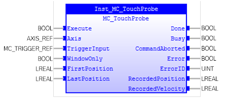
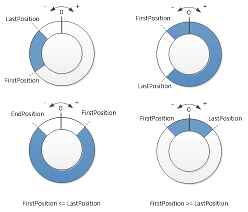
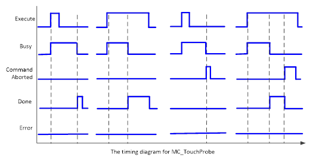

MC_TouchProbe
Records an axis position at a trigger event.

Description:
MC_TouchProbe records an axis position at a trigger event.The
actual position and velocity will be recorded at the rising edge of ‘Execute’.
‘WindowOnly’ is used to enable or disable window inputs (‘FirstPosition’
and ‘LastPosition’). When ‘WindowOnly’ is TRUE, triggers are detected only when
the axis position is within the range specified by ‘FirstPosition’ and ‘LastPosition’.
When ‘WindowOnly’ is FALSE, triggers are detected for all axis positions.
The window range is specified by ‘FirstPosition’ and ‘LastPosition’.
It should be defined as ‘FirstPosition’ < ‘LastPosition’ if the axis works
as linear axis. The range for the window is [‘FirstPosition’, ‘LastPosition’].
If the axis works in modulo mode, the range for the trigger
event window is defined from start position ‘FirstPosition’ to ‘LastPosition’
along the positive rotation.

This Function Block does not affect the PLCopen state diagram.
The timing diagram is shown as below:

‘Busy’ changes to TRUE at the rising edge of ‘Execute’, and stays
TRUE until ‘Done’, ‘CommandAborted’, or ‘Error’ changes to TRUE.
‘CommandAborted’ changes to TRUE when this instruction is
aborted by MC_AbortTrigger (the only possibility to abort) and stays TRUE until
‘Error’ or ‘Execute’ changes to FALSE. It will stay TRUE for one or more cycles
if ‘Execute’ has been FALSE.
‘Done’ changes to TRUE when trigger event is recoded and
stays TRUE until ‘CommandAborted’ or ‘Execute’ changes to FALSE. ‘Done’ stays
TRUE for one or more cycles if ‘Execute’ has been FALSE.
The input-output parameter ‘TriggerInput’ defines the
trigger input source and mode. It is a structure type as below:
|
STRUCT
Mode : MC_TRIGGER_MODE;
Channel: UINT;
Source: UINT;
Edge: MC_TRIGGER_EDGE;
END_STRUCT
|
Member of ‘Edge’ defines the edge type of trigger input for
recording function. It is an enumeration with ‘mcRisingEdge’ and ‘mcFallingEdge’
values.
Member of ‘Mode’ is an enumeration type with ‘mcHardware’
and ‘mcTime’ values.
Members of ‘Channel’ and ‘Source’ present different meanings
under different modes of ‘Mode’.
•
mcHardware
|
channel:
|
0
|
Selects channel A (Refer to
REG_INPUTS in TrioBASIC help).
|
|
1
|
Selects channel B ( Refer to
REG_INPUTS in TrioBASIC help ).
|
|
0 .. 511
|
Digital input selection when
source set to 4.
|
|
source:
|
0
|
Selects the first 24V input.
|
|
1
|
Selects the Z mark.
|
|
2
|
Selects the second 24V input. (if
available)
|
|
4
|
Selects any digital input as
source, used on any axis.
|
•
mcTime
|
channel:
|
0…7
|
This is the registration channel
to be used (range 0..7)
|
|
source:
|
source + 256
|
Physical input assigned to the
logical channel ( 0x80 + input number ).
|
Make sure the input and output parameters are of data type
indicated in the table below.
Intended for single shot operation, that is the first event after
the rising edge at ‘Execute’ is valid for recording only. Possible following
events are ignored.
One FB instance should represent exactly one probing command.
In case of multiple instances on the same probe and axis, the
elements of MC_TRIGGER_REF should be extended with TouchProbeID -
Identification of a unique probing command – this can be linked to
MC_AbortTrigger.
The data type TriggerInput is defined as below:
|
STRUCT
Mode : MC_TRIGGER_MODE;
Channel: UINT;
Source: UINT;
Edge: MC_TRIGGER_EDGE;
END_STRUCT
|
Inputs/Outputs:
|
Name
|
Data Type
|
Description
|
|
INPUTS
|
|
Execute
|
BOOL
|
Starts touch probe recording at rising
edge
|
|
Axis
|
AXIS_REF
|
Reference to the axis
|
|
TriggerInput
|
MC_TRIGGER_REF
|
Reference to the trigger signal
source.
|
|
WindowOnly
|
BOOL
|
If SET, only use the window (defined
hereunder) to accept trigger events
|
|
FirstPosition
|
LREAL
|
Start position from where (positive
direction) trigger events are accepted. Value included in window.
|
|
LastPosition
|
LREAL
|
Stop position of the window. Value
included in window.
|
|
OUTPUTS
|
|
Done
|
BOOL
|
Trigger
event recorded
|
|
Busy
|
BOOL
|
The
FB is not finished and new output values are to be expected
|
|
CommandAborted
|
BOOL
|
'Command'
is aborted by another command (MC_AbortTrigger)
|
|
Error
|
BOOL
|
Signals
that an error has occurred within the FB
|
|
ErrorID
|
UINT
|
Error
identification
|
|
RecordedPosition
|
LREAL
|
Position
where trigger event occured
|
|
RecordedVelocity
|
LREAL
|
Velocity
where trigger event occurred
|
Examples:
Example 1:
|
 Example
Example
|
|
Axis0Ref.AxisNo
:=
0
;
mTrigInput.Channel :=
0
;
(*
the registration channel to be used *)
mTrigInput.Edge := mcRisingEdge;
(* The rising edge *)
mTrigInput.Mode := mcHardware;
mTrigInput.Source :=
0
;
(*
Selects the 24V registration input. *)
inst_TouchProbe( Axis := Axis0Ref,
(*AXIS_REF*)
TriggerInput
:= mTrigInput,
(*MC_TRIGGER_REF*)
Execute
:= bExecute,
(*BOOL*)
WindowOnly
:= bWindowOnly,
(*BOOL*)
FirstPosition
:= lrOnPos,
(*LREAL*)
LastPosition
:= lrOffPos );
(*LREAL*)
bDone := inst_TouchProbe.Done;
bBusy := inst_TouchProbe.Busy;
bCommAborted := inst_TouchProbe.CommandAborted;
bError := inst_TouchProbe.Error;
ErrorId := inst_TouchProbe.ErrorID;
IF
(bDone =
TRUE
)
THEN
lrRecordPosition := inst_TouchProbe.
RecordedPosition;
lrRecordVelocity := inst_TouchProbe.
RecordedVelocity;
END_IF
;
|
See also: